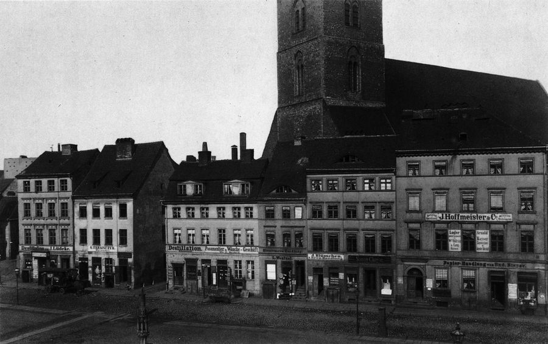

Pick a group size and see the group standing around its guide, drawn to scale. Tap any person to stand there. The photo on the right shrinks to the size a hand-held archive print looks from that spot.

This is a model, not a measurement. It gives each person a standing space of 0.9 m by 0.9 m, which is a loose, comfortable group, and fans the rows out in front of the guide from 1.5 m. The photo is modelled as an A4 print, 30 cm wide; a bigger print scales every photo figure by the same factor. Sound from one speaker outdoors falls by about 6 decibels each time the distance doubles. A real pavement, a narrow bridge or a loud street makes a large group spread further than this.